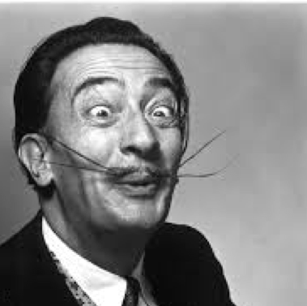

Bookstore
Art
Artists
Frida Kahlo
Jean-Michel Basquiat
Salvador Dalí

The first man to compare the cheeks of a young woman to a rose was obviously a poet; the first to repeat it was possibly an idiot.
Design
Designers
David Carson
Neville Brody
Digital design is like painting, except the paint never dries.
Typography
Typographers
Jan Tschichold
Matthew Carter
Susan Kare
When you study art history, you learn that there is very little that is completely new, and in many ways digital art is no different. I love to derive inspiration from all types of images: mosaics, hieroglyphics, petroglyphs, woven patterns in textiles, and needlework. There is a lot of very good pixel design work before the 20th century, like a 1760 sampler by Elizabeth Laidman that looks like a bitmap font.
Engineering
Engineers
Håkon Wium Lie
Linus Torvalds
See, you not only have to be a good coder to create a system like Linux, you have to be a sneaky bastard too.
Tim Berners-Lee